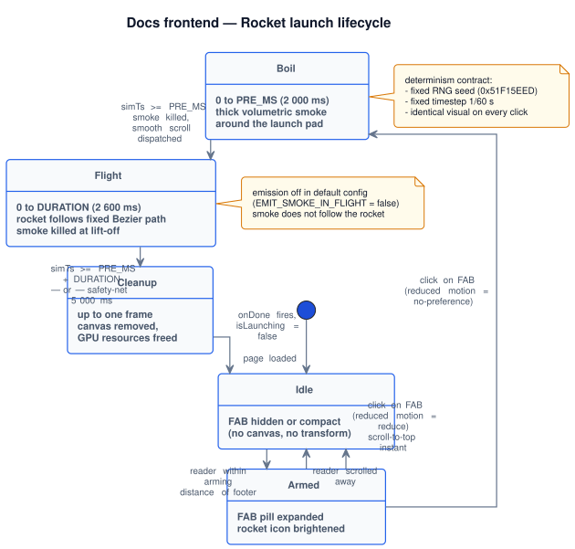
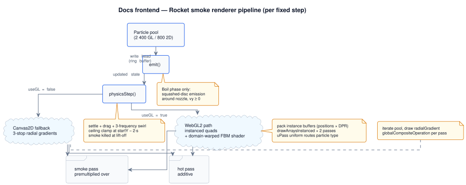
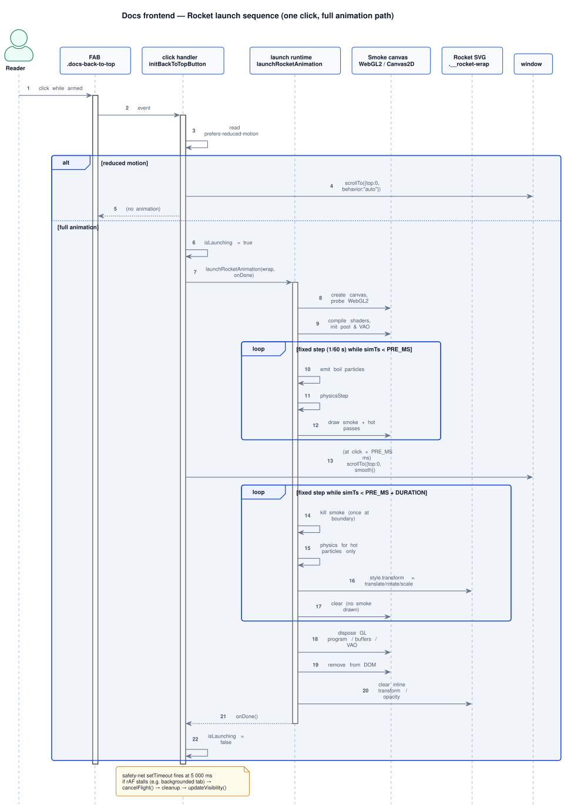

Docs frontend rocket launch animation Component
Docs portal · Reading aids
Overview
The rocket launch animation is the celebratory dismissal of the floating back-to-top button on internal docs pages. When the reader has scrolled to the footer (the armed state) and clicks the FAB, the page plays a short, deterministic launch sequence: a thick boil of smoke gathers around the launch pad for two seconds, then the rocket flies a fixed Bézier trajectory off-screen while the page smooth-scrolls to the top.
This page is the authoritative behavioural specification for that animation — its phases, invariants,
tunable parameters, renderer paths, and acceptance criteria. It does not describe the
implementation line by line; it describes the contract the implementation must honour. Source-of-truth
for the contract is this page; source-of-truth for the code is
docs/assets/docs-nav.js (function launchRocketAnimation()).
Live in production with the WebGL2 rewrite. Feature ledger entry: DFEAT-010 in the
architecture map. Sister page:
resume-reading and back-to-top (covers the
FAB visibility / arming logic; this page covers what happens after the click).
Goals and non-goals
The animation is a small but high-visibility moment. The contract is shaped by what it explicitly is and isn't.
| Goals | Non-goals |
|---|---|
| Reward the reader who completed the page with a memorable, premium moment. | Be a randomised "spectacle" — every click must produce the same animation. |
| Run identically across machines, browsers, and refresh rates (deterministic replay). | Communicate any information by motion alone — the scroll-to-top works without it. |
| Degrade gracefully on hardware without WebGL2 or with reduced-motion preference. | Block, delay, or compete with input — the FAB stays clickable and clean-up is bounded. |
| Stay strictly local in viewport: smoke must not "follow" the rocket up the page. | Add a persistent particle simulator beyond the lifetime of one click. |
| Stay within a fixed performance budget (see Performance budget). | Allocate persistent GPU resources beyond the animation lifetime. |
Lifecycle and phases
One launch is one finite-state sequence. Each phase has a fixed duration in milliseconds; transitions are time-based (not event-based) so the sequence is reproducible.
Phase transitions
Idle → Armed → Boil (PRE) → Flight → Cleanup. All edges are time-based against the simulation clock; no event mid-run can change the topology.

docs/uml/sequences/rocket_launch_lifecycle.puml
| Phase | Trigger | Default duration | Visible behaviour | Observable end condition |
|---|---|---|---|---|
| Idle | Page loaded; FAB hidden or disarmed. | — | No canvas, no transform on the rocket SVG. | Reader scrolls into arming distance from footer. |
| Armed | Reader within arming distance of footer. | — | FAB pill expands, rocket icon brightens. | Click on FAB. |
| Boil (PRE) | Click while armed. | PRE_MS = 2000 ms |
Wide, billowing volumetric smoke gathers around the pad. Rocket SVG sits stationary on the pad. | Simulation clock reaches PRE_MS. |
| Flight | Boil ended. | DURATION = 2600 ms |
Smoke is removed instantly. Rocket SVG follows the fixed Bézier trajectory and fades out near the end. | Simulation clock reaches PRE_MS + DURATION. |
| Cleanup | Flight ended or safety-net timeout. | ≤ 1 frame | Canvas removed from DOM, rocket transform/opacity cleared, GPU resources released. | onDone callback fires; FAB enters Post-launch suppressed state. |
| Post-launch suppressed | Cleanup completed. | Until first user scroll (≤ 4 000 ms safety cap) | FAB is force-hidden regardless of scroll position. Compact pill and progress-ring do not appear, even if the smooth-scroll-to-top has not yet settled. | User initiates a real scroll movement after the page reaches scrollY === 0, or the 4 000 ms safety timer expires. |
The page-scroll-to-top action is dispatched by the click handler at the boundary between Boil and Flight
(~PRE_MS ms after click) so the rocket appears to "carry" the reader upward. Under
prefers-reduced-motion: reduce the entire sequence is skipped and the page jumps to top
instantly — see States and accessibility.
Why post-launch suppression exists. Cleanup runs the moment the rocket exits the
viewport, but the smooth-scroll-to-top is often still mid-page at that instant. Without suppression,
updateVisibility() would re-evaluate scroll position, find the page still past the compact
threshold, and immediately re-show the FAB in compact mode — making its progress-ring fade in at the
bottom-right as a "phantom circle" where the rocket used to live. The suppression flag holds the FAB
hidden through the rest of the smooth scroll and only releases on the user's next genuine scroll
input, so the icon (with its scroll-driven dynamics) only reappears when the reader actually starts
scrolling again.
Anatomy
- FAB pill (
.docs-back-to-top) — fixed-position container at bottom-right of viewport. Hosts the rocket icon and progress ring; carries the armed / launching CSS classes. - Rocket wrap (
.docs-back-to-top__rocket-wrap) — the inline-SVG wrapper the runtime drives via inlinetransform. The DOM contract: this element exists inside the FAB, and the runtime treats it as the moving body. Replacing the element changes the moving subject. - Smoke canvas — a single
<canvas>created lazily on click, appended todocument.body, fixed-positioned over the full viewport withpointer-events: none. Owned by the animation, removed on cleanup. - Render context — either a
WebGL2RenderingContext(preferred) or aCanvasRenderingContext2D(fallback). The choice is made once at click time and cannot change mid-animation. - Particle pool — an in-memory buffer of typed structures used for one launch and discarded on cleanup. Not exposed to other modules.
Stacking note. The smoke canvas is given a high z-index so it sits above
page content; the FAB is at a lower z-index. The canvas is mostly transparent during
flight, so the rocket SVG remains visible through the canvas. Any future change that increases canvas
opacity outside the boil region must explicitly re-justify this stacking choice.
Trajectory and smoke region
Hand-authored inline SVG. Smoke stays anchored at the launch pad while the rocket follows a fixed Bézier path with a loop and exits off-screen upward.
Positioning and stacking
The rocket FAB is the launchpad and the donor of physical dimensions for the bug FAB
(report-bug-fab
§positioning-and-stacking mirrors these numbers). All values are
uniform across desktop, tablet, and mobile per the
#mobile-contract
«no font-size / width / height in width-conditional
@media» rule.
| Property | Value (uniform across all viewports) |
|---|---|
Outer size (.docs-back-to-top) |
52 × 52 px — meets WCAG 2.1 Level AAA tap-target (≥ 44 × 44 px); larger than the AA floor of 24 × 24 px. |
Rocket glyph wrap (.docs-back-to-top__rocket-wrap) |
28 × 28 px — donor for .docs-report-bug-fab__icon. |
right |
max(1.25rem, env(safe-area-inset-right, 0px)) |
bottom |
calc(max(1.25rem, env(safe-area-inset-bottom, 0px)) + var(--docs-footer-visible-h, 0px)) |
z-index |
40 (one above the bug FAB at 39; both below modal/drawer). |
| Cluster geometry | Rocket bottom edge at ≈ 20 px from the screen bottom; rocket top edge at ≈ 72 px. Bug FAB bottom edge at ≈ 84 px (rocket top + 12 px gap). Identical on every viewport. |
Authoritative source-of-truth for the numbers:
.docs-back-to-top in docs/assets/docs.css. If you change the size
here, also update the bug FAB spec — the two are a visual pair and drift between them is a
review blocker per
report-bug-fab Do's and Don'ts.
History: until 2026-05-01 the bug FAB shrank to 38 × 38 px on
≤ 740 px while the rocket stayed at 52 × 52 px — a regression below
the WCAG 44 × 44 tap-target floor. The mobile @media block in docs.css
was removed; both FABs are now 52 × 52 px with 28 × 28 px glyphs on
every viewport.
Visual gallery
Raster screenshots of the rocket FAB across canonical viewports and lifecycle phases. Filenames and capture rules are defined in screens/components/README. Update these images in the same PR as any visual change.
Slots are placeholders until either the manual capture or the Playwright
harness fills them. Animation phases (boil at t = 1.0 s,
flight at t = 1.6 s) are captured at the canonical timestamps
from §lifecycle.
rocket-launch-animation-desktop.png
rocket-launch-animation-tablet.png
rocket-launch-animation-mobile-pro-max.png
rocket-launch-animation-mobile-se.png
rocket-launch-animation-mobile-pro-max-armed.png
rocket-launch-animation-desktop-boil.png
rocket-launch-animation-desktop-flight.png
Visual reference: morph states and glyph anatomy
The trajectory mock above describes where the rocket flies. This section describes
what the FAB looks like at each lifecycle state, and what the rocket glyph is made
of. The same inline SVG drives all three states — only the surrounding CSS classes
(--visible, --armed, --launching) and the ornament
siblings (embers, flame, smoke, speed lines) change.
FAB morph states and rocket glyph
Top row: the same DOM, three classes — Compact, Armed, Launching. Bottom: 4× detail of the four-path rocket glyph driving every state.
initBackToTopButton() in docs/assets/docs-nav.js;
states correspond to .docs-back-to-top--visible,
--armed, and --launching in
docs/assets/docs.css. The glyph paths are byte-identical to the runtime SVG.
What the four glyph paths render. Path #1 is a single cubic Bézier outline of
the rocket body / nose cone. Path #2 is the porthole circle (constructed as two arcs to keep
the rocket a one-line stroke). Path #3 holds two short angled strokes for the left and right
fins. Path #4 is a 2.4-unit horizontal line that "closes" the nozzle base. Together they make
a one-colour, four-path icon that inherits currentColor — which is exactly why
the rocket re-tints accent the moment the FAB enters the armed state, with no class on the
SVG itself.
The ornaments around the glyph (5 embers, 1 flame, 3 smoke puffs, 2 speed lines, 1 progress
ring, 1 trail) are siblings of the rocket SVG inside
.docs-back-to-top__rocket-wrap. They are present in the DOM at all times and
gated visually by class: embers fade in on --armed, flame and smoke wake on
--launching, the progress ring is visible only when neither armed nor launching.
Determinism contract
The animation is required to be byte-for-byte reproducible. This is a behavioural contract, not a performance optimisation, and breaking it is a correctness regression.
- Fixed RNG seed. The particle RNG is reset to the same seed at the start of every launch. Two consecutive launches produce identical particle trajectories.
- Fixed simulation timestep. Physics and emission run at
FIXED_STEP = 1/60 swith an accumulator. Frames may be skipped or doubled by the rendering layer; the simulation clock is decoupled fromrequestAnimationFrame. - Single trajectory. The rocket follows one fixed sequence of cubic Bézier segments. No randomisation, no per-click variant.
- Closed-form arc-length reparameterisation. A precomputed lookup table guarantees constant-rate motion along the trajectory, independent of frame timing.
- Time-based phase transitions. Boil → Flight → Cleanup transitions are scheduled against the simulation clock, never against wall-clock or input events.
Reviewers verifying this contract should reproduce by clicking the rocket twice and visually comparing
the smoke shapes at ~1.5 s in. They must be indistinguishable. See
Test plan for the deterministic-replay procedure.
States and accessibility
| Surface | States | Role / ARIA | Keyboard | Reduced motion | Screen-reader announcement |
|---|---|---|---|---|---|
| FAB (pre-click) | hidden, compact, armed, hovered, focused, launching, post-launch suppressed | role="button"; aria-label="Back to top" in compact, "Launch rocket and scroll to top" when armed; aria-hidden="true" while post-launch suppressed |
Tab reaches once visible; Enter/Space activates | Animation is suppressed; click jumps to top instantly | "Back to top, button" / "Launch rocket and scroll to top, button" |
| Smoke canvas (Boil) | not present, mounted, drawing | Decorative; aria-hidden="true" implicit (canvas with no content) |
Not focusable; pointer-events: none |
Not created — the entire animation is skipped | Silent |
| Rocket SVG (Flight) | at-rest, transforming, fading | Decorative inside the FAB; the FAB carries the label | Not separately focusable | Stays at rest; FAB performs the scroll synchronously | Silent (FAB label already announced on click) |
The contract under prefers-reduced-motion: reduce is binary: either the animation runs in
full or it is suppressed entirely. Partial-motion variants (e.g. faster animation) are explicitly out
of scope to keep the contract simple to audit.
Renderer selection matrix
The runtime probes for WebGL2 once at click time. The result fixes the renderer for the entire launch. Both renderers consume the same particle pool and physics output; only the visual fidelity differs.
Per-fixed-step data flow
CPU pool → emit → physics → renderer routing → smoke pass + hot pass. Both renderers consume the same particle state.

docs/uml/sequences/rocket_renderer_pipeline.puml
| Aspect | WebGL2 path (preferred) | Canvas2D fallback |
|---|---|---|
| Selection trigger | canvas.getContext("webgl2", …) returns a non-null context |
WebGL2 unavailable, GPU disabled, or shader setup fails |
| Particle pool size | ≈ 2 400 | ≈ 800 |
| Per-particle visual | Instanced quad with procedural domain-warped FBM noise (see Smoke visual specification) | Soft radial gradient (3-stop) |
| Blend strategy | Two passes per frame: smoke (premultiplied "over") + hot core (additive) | Two passes per frame: hot core (lighter) + smoke (source-over) |
| DPR handling | Backing store at min(devicePixelRatio, 2), positions multiplied by DPR |
1× backing store (CSS pixel size) |
| Fidelity gap | Volumetric "cauliflower" puffs with internal billowing structure | Soft circular blobs without internal structure; fewer puffs visible |
| Failure handling | Shader compile/link failure logs a warning and falls through to a no-op renderer (rocket still flies, no smoke) | None — Canvas2D is the terminal fallback |
Determinism note. Both renderers operate on the same CPU-side particle state, so the positions of puffs are identical between WebGL2 and Canvas2D — only the per-pixel shading differs. A regression tester comparing centroid positions can reuse the same fixtures across both paths.
Particle system specification
Pool
- Fixed-size pool allocated at the start of each launch and freed on cleanup. Size is renderer-dependent (see matrix above).
- Ring-buffer write head: new emissions overwrite the oldest slot. Particles do not maintain an order invariant.
- Particles carry: position, velocity, lifetime envelope (
life∈ [0, 1] andmaxLin seconds), size, kind (smoke / hot), and seed.
Emission policy — Boil phase
- Source. All emissions originate from the rocket's nozzle position, which is the SVG's bottom edge in pad-relative coordinates (a fixed offset below the FAB centre while the rocket is at rest).
- Shape. A flattened disc around the nozzle: angle uniform over
2π, radial offset weighted by√(rand)for area-uniform distribution, vertical axis squashed to ≈ 0.36 × horizontal so the cloud reads as "settled along the ground" rather than a sphere. - Rate. Per fixed step (
1/60 s) the count is a uniform draw over a small range, scaled by a "spool-up" factor that grows withsimTs / PRE_MS— the cloud thickens as launch approaches. - Initial velocity. Outward radial speed (px/s) plus a small lateral jitter; vertical component is strictly non-negative — particles are never given an upward impulse.
- Lifetime. A multiple of
SMOKE_LIFETIMEwith a random factor; some puffs fade quickly, others persist into the late boil.
Emission policy — Flight phase
- Default: no emission.
EMIT_SMOKE_IN_FLIGHTisfalsein the shipping configuration. - Optional (flag
true): a thin trail behind the moving nozzle, with a small fraction of "hot core" particles for an additive flame look. This branch is reserved for visual experimentation and is not part of the shipping contract.
Physics — Boil phase
- Per step,
lifedecays bydt / maxL; particles withlife ≤ 0are skipped. - Position integrates current velocity.
- Vertical velocity is clamped to ≥ 0 and accelerated downward by
SMOKE_SETTLE_ACC(settling). - Horizontal velocity receives a multi-frequency sinusoidal "swirl" perturbation seeded from the particle seed — this is what makes individual puffs read as boiling clumps rather than a smooth ring.
- Both velocity components decay by
SMOKE_DRAGper1/60 s. - Vertical velocity is capped to a soft maximum to avoid abrupt settling.
- Position has a hard upper-bound at the launch row: the cloud must never visually rise above the rocket's start position during boil.
Physics — Flight phase
At the boil → flight transition the runtime sets life = 0 on every smoke particle. From this
instant onward there are no smoke particles to simulate or render. Hot-core particles, if present,
continue with simple drag-only physics until they expire naturally.
Lifetime envelopes (informative)
| Particle | Typical lifetime | Visible while |
|---|---|---|
| Smoke (boil) | 2.5 – 4.2 s | Boil phase only — instantly killed at lift-off |
| Hot core (in-flight, if enabled) | 0.18 – 0.40 s | Brief flashes near nozzle during flight |
Smoke visual specification
On the WebGL2 path each particle is rendered as a textured quad with a procedural shader. The shader is the visual identity of the animation; describing it as a contract lets us reason about visual regressions without diffing GLSL.
Per-particle puff shape
- Bounding shape: circular within a square quad — fragments outside the unit circle are discarded.
- Falloff: a mix of two smoothstep curves so the centre is dense and the rim fades to a soft fog.
- Internal structure: domain-warped fractal Brownian motion (FBM) — an FBM whose sample coordinate is itself perturbed by another FBM. Visually this produces "cauliflower bulb" billowing rather than a smooth blob.
- Per-particle modulation: a per-particle clump factor adds visible contrast between dense and translucent zones across the population, so the cloud reads as a collection of distinct puffs.
- Ageing: the FBM domain shifts with particle age — each puff visibly evolves over its lifetime rather than appearing static.
Colour palette
The smoke palette is a light grey with a faint lavender bias, intentionally theme-independent: the
canvas ships one set of colour stops that renders identically against both the light
(#f7f9fc) and dark page backgrounds. Two earlier iterations were rejected on the way
here — a deep charcoal that read as a solid black blob, and a mid-grey that still skewed too dark —
in favour of the light-grey values below.
| Role | RGB (0–1) | Visible at |
|---|---|---|
| Inner (dense) | 0.88 / 0.87 / 0.91 | Centre of dense puffs |
| Mid | 0.78 / 0.77 / 0.82 | Body of the puff |
| Outer (fog) | 0.68 / 0.66 / 0.72 | Rim and translucent halo |
The palette is a single source of truth for both light and dark themes — there is no theme detection
in the renderer, no uLight uniform, and no per-theme branch in the Canvas2D fallback.
Light-grey smoke against the light page background relies on the slightly darker outer rim
(0.68 / 0.66 / 0.72) plus the alpha multiplier of 1.6 on the smoke pass to
give puffs a readable silhouette without pushing them to alpha-saturation (which is what made the
previous charcoal palette read as black). If we later introduce per-theme palettes, the colour stops
above become theme-tokenised and this table moves into the
token gallery.
Hot core (optional)
- Used only when
EMIT_SMOKE_IN_FLIGHTis enabled. - Colour ramps from yellow-white (
#FFE16E) at fresh emission to deep orange (#FF8214) and out to opaque red-black (#A01E00) at the rim. - Rendered with additive blending on top of the smoke pass, so overlapping cores brighten naturally.
Tunable parameters reference
All numeric tunables live as constants at the top of launchRocketAnimation() in
docs/assets/docs-nav.js. Changing one and reloading the page reproduces the new behaviour
deterministically. Ranges below are the bands within which we keep the contract intact; values outside
them require a new revision of this spec.
| Parameter | Default | Supported range | Observable effect |
|---|---|---|---|
DURATION |
2 600 ms |
1 800 – 3 500 ms | Length of the flight phase from lift-off to off-screen. |
PRE_MS |
2 000 ms |
1 200 – 3 000 ms | Length of the boil phase. Below 1 200 ms the cloud does not reach visible density. |
POST_SMOKE_MS |
0 ms |
0 – 800 ms | Padding between flight end and cleanup. Currently zero because smoke is killed at lift-off. |
FIXED_STEP |
1 / 60 s |
Fixed; do not change | Simulation timestep. Determinism contract depends on this being constant. |
SMOKE_LAG_MS |
140 ms |
60 – 240 ms | Visual lag of the trail behind the nozzle (only relevant if EMIT_SMOKE_IN_FLIGHT). |
SMOKE_SETTLE_ACC |
50 px/s² |
20 – 120 | Downward gravity on smoke during boil. Higher values flatten the cloud against the pad. |
SMOKE_DRAG |
0.93 |
0.85 – 0.97 | Velocity retention per 1/60 s. Lower values bring puffs to rest faster. |
SMOKE_SPREAD |
1.0 |
0.5 – 1.6 | Global multiplier on radial dispersion. Acts as a single dial for "how wide is the cloud". |
SMOKE_LIFETIME |
3.0 s |
1.5 – 5.0 s | Base puff lifetime before the per-particle random factor. |
EMIT_SMOKE_IN_FLIGHT |
false |
true / false |
Enables the in-flight trail. Off by default so smoke never "follows" the rocket. |
| RNG seed | 0x51F15EED |
Any 32-bit value | Changes the deterministic shape of every cloud; not user-facing. |
The renderer-specific dials (pool size, emission count per step, disc radius, particle size range, shader FBM scale and clump contrast, alpha factor) are documented in source comments next to their assignments. They are not part of the public contract because changing them swaps the visual identity of the animation; touching them requires a revision of Smoke visual specification.
Public surface
Call flow (one click)
End-to-end sequence from reader click to cleanup. Both the reduced-motion path (instant scroll, no animation) and the full-animation path are shown explicitly so reviewers can audit either branch in isolation.
Reader → FAB → launch runtime → canvas + rocket
Boil-phase emission and physics run on each fixed step; flight phase kills smoke once and animates the rocket SVG; cleanup runs synchronously or via the 5 000 ms safety-net.

docs/uml/sequences/rocket_launch_sequence.puml
Performance budget
The animation is short, infrequent, and self-cleaning, so its budget is generous compared with steady-state UI. Targets below are upper bounds at the moment the cloud reaches peak density (≈ 1.7 s into boil).
| Metric | Target — WebGL2 | Target — Canvas2D fallback |
|---|---|---|
| Frame time, p95 | ≤ 12 ms (≥ 60 fps) | ≤ 16 ms (≥ 60 fps) |
| Frame time, p99 | ≤ 24 ms | ≤ 33 ms |
| JS main-thread busy time per frame | ≤ 4 ms | ≤ 10 ms |
| Persistent allocations beyond cleanup | 0 | 0 |
| Persistent GPU resources beyond cleanup | 0 (program/buffers/VAO are deleted) | — |
| Total animation duration end-to-end | ≤ 4 700 ms | ≤ 4 700 ms |
Devices that miss the WebGL2 p95 target (low-power integrated GPUs, throttled mobile) are expected to still complete the animation; they will simply drop frames. Determinism still holds because the simulation clock is decoupled from the render clock.
Failure modes and degradation
| Failure | Detection | Behaviour |
|---|---|---|
| WebGL2 unavailable | getContext("webgl2", …) returns null |
Canvas2D fallback runs to completion with reduced fidelity. |
| Shader compile or link fails on a WebGL2-capable browser | Compile/link status is false |
A console warning is emitted and the renderer becomes a no-op. The rocket still flies; no smoke is drawn. Cleanup runs as normal. |
| WebGL context lost (driver reset, OS sleep) | Browser fires webglcontextlost |
Current animation frames may be dropped. The simulation clock continues; cleanup still fires within the safety-net timeout. |
| Tab backgrounded mid-animation | requestAnimationFrame stalls |
A safety-net setTimeout at PRE_MS + DURATION + POST_SMOKE_MS + 400 ms force-completes cleanup so the FAB remains usable. |
| Click during another active animation | isLaunching is true |
The new click is ignored. There is no animation queue. |
| FAB clicked while disarmed | --armed class absent |
A short shake animation plays; no rocket animation runs and no scroll is performed. |
prefers-reduced-motion: reduce |
Media query at click time | Animation is skipped entirely. The page jumps to top with behavior: "auto". |
Do's and Don'ts
| Do | Don't |
|---|---|
Treat SMOKE_SPREAD as the primary dial when reviewing a visual change request — it tunes the cloud width without disturbing density or timing. |
Edit the RNG seed, the trajectory, or FIXED_STEP to "tweak" the look. Those are determinism-load-bearing. |
Verify the prefers-reduced-motion: reduce path on every change — the path is a single branch but it is a shipping requirement. |
Add motion-only feedback that the click was registered. The smooth-scroll itself confirms the click; the animation is celebratory, not informational. |
Keep the smoke canvas at pointer-events: none and high z-index so it sits over content but never intercepts clicks. |
Portal the canvas into a different stacking context "for layering". Composing across stacking contexts is brittle and the existing setup is verified. |
| Audit any change that increases pool size, particle size, or shader complexity against the performance budget. | Ship a "wow it's denser" change without measuring frame times on a low-power laptop. The animation runs once, but the first frame is the impression. |
Set EMIT_SMOKE_IN_FLIGHT = false in the shipping configuration. The contract is "smoke does not follow the rocket". |
Re-enable EMIT_SMOKE_IN_FLIGHT without first revising Goals and non-goals and Determinism contract. |
Keep .docs-back-to-top sizing (52 × 52 px button + 28 × 28 px glyph) identical on desktop, tablet, and mobile. The bug FAB matches exactly — see §positioning-and-stacking. |
Add a @media (max-width: …) rule that changes .docs-back-to-top's width, height, or padding. Per #mobile-contract the FAB cluster is uniform across viewports. |
Acceptance checklist
- FAB sizing is identical on every viewport:
52 × 52 pxbutton with a28 × 28 pxrocket glyph on desktop, tablet, and mobile (no@media-conditional shrink). The companion bug FAB matches exactly — drift between the two is a review blocker. See §positioning-and-stacking and #mobile-contract. - Two consecutive launches produce visually indistinguishable smoke shapes at
t = 1.5 s. - The boil phase is visibly thick and wide by
t = 1.0 s(cloud spans ≥ 200 px around the FAB at defaultSMOKE_SPREAD). - At lift-off the smoke disappears within one rendered frame; no smoke is visible during flight.
- The rocket follows a single fixed trajectory upward; only the rocket SVG translates — no other element animates upward.
- Under
prefers-reduced-motion: reducethe click jumps to top instantly with no canvas mounted. - On WebGL2-incapable browsers the launch completes via the Canvas2D fallback with no console errors.
- Cleanup removes the canvas from the DOM and releases GPU resources within one frame of flight end (or within the safety-net timeout if rAF stalls).
- A second click during an in-flight animation is silently ignored; no double animation.
- The FAB returns to its normal post-launch state (compact pill, no
--launchingclass) after cleanup. - Immediately after the rocket exits, the FAB stays hidden — no compact pill or progress-ring "phantom circle" appears at the bottom-right while the smooth-scroll-to-top is still in flight.
- The FAB only re-appears once the user starts a fresh scroll movement after the page has settled at
scrollY === 0; a 4 000 ms safety timer is the upper bound. - No persistent timers, listeners, storage entries, or DOM nodes are left behind.
Test plan
Deterministic-replay (manual)
- Open any internal docs page and scroll to the footer.
- Click the rocket. Capture a screenshot at simulated
t = 1.5 s. - Reload the page, repeat. Compare screenshots — they must be pixel-identical (modulo sub-pixel anti-aliasing on different DPRs of the same machine).
Reduced-motion (manual)
- Enable OS-level reduced motion (or DevTools emulation).
- Click the rocket. The page must jump to top instantly. No canvas mount in the DOM tree.
Fallback path (manual)
- Disable WebGL2 (Chrome:
chrome://flags→ "WebGL 2.0" → Disabled, restart). - Click the rocket. The animation must complete using the Canvas2D path.
Performance regression (semi-automated)
- Run the launch under DevTools Performance recording on a reference low-power profile.
- Verify p95 frame time and JS busy time against the budget table.
Cleanup invariants (manual)
- After one launch, verify in DevTools that no
<canvas>element remains in the DOM, norequestAnimationFramehandles are pending, and nosetTimeouts related to the launch are scheduled.
Visual-regression automation is out of scope for this revision; the deterministic-replay procedure is the working substitute. A future revision may add a Playwright fixture that captures and diffs the canvas image at a fixed simulated time.
Implementation map
docs/assets/docs-nav.js·initBackToTopButton()— owns the FAB lifecycle, arming logic, click handling, reduced-motion gate, and thesuppressUntilUserScrollpost-launch visibility flag. CallslaunchRocketAnimation()on armed clicks.docs/assets/docs-nav.js·launchRocketAnimation(wrap, onDone)— the closed-scope runtime described in this spec. Returns acancelFlightfunction used by the safety-net timeout.docs/assets/docs-nav.js·finishLaunch()closure — theonDonecallback. SetssuppressUntilUserScroll = true, callsupdateVisibility(), defers removing--launchingby 320 ms so the pill stays transparent through the FAB fade-out, and arms the 4 000 ms safety release.docs/assets/docs.css·.docs-back-to-top*rules — FAB visual states (compact, armed, launching, nudge), ambient flame/trail/smoke ornaments, reduced-motion overrides.docs/internal/front/docs-frontend-architecture-map.html— feature ledger entryDFEAT-010points at this page as the authoritative spec.
Out of scope
- Configurable per-page rocket variants, multiple trajectories, or themed palettes — all explicitly rejected to keep the contract auditable.
- Audio or haptic feedback during the launch — none planned.
- Persisting or replaying past launches across navigations — the animation is ephemeral by design.
- Visual-regression CI integration — tracked separately; deterministic-replay is the working substitute.
- WebGPU path — premature; the WebGL2 path is sufficient for the budget.
Page history
| Date | Change | Author |
|---|---|---|
| Added the Visual reference section: an inline-SVG mock of the FAB's three morph states (Compact with progress ring, Armed with embers and accent border, Launching with flame, smoke, and speed lines) plus a 4× detail of the four-path rocket glyph (nose cone, porthole, fins, tail line) with annotated parts. Complements the existing trajectory diagram by showing what readers see at each lifecycle stage and how the same DOM yields three visuals via class swaps. | Ivan Boyarkin | |
Added the Post-launch suppressed phase to the lifecycle and a matching pre-click state. Documented the suppressUntilUserScroll flag, the two-stage release (settle at scrollY === 0, then first user scroll), and the 4 000 ms safety cap. Updated public surface, acceptance checklist, and implementation map. Reason: the compact pill / progress-ring used to fade in at the bottom-right the moment the rocket exited, before the smooth-scroll-to-top had finished — a "phantom circle" where the rocket used to be. |
Ivan Boyarkin | |
| Page created — first authoritative specification for the WebGL2 rocket launch animation, including determinism contract, renderer matrix, particle and visual specs, performance budget, failure modes, acceptance checklist, spec-metadata header, and four diagrams (lifecycle state machine, call-flow sequence, renderer pipeline, and inline-SVG spatial anatomy). | Ivan Boyarkin |